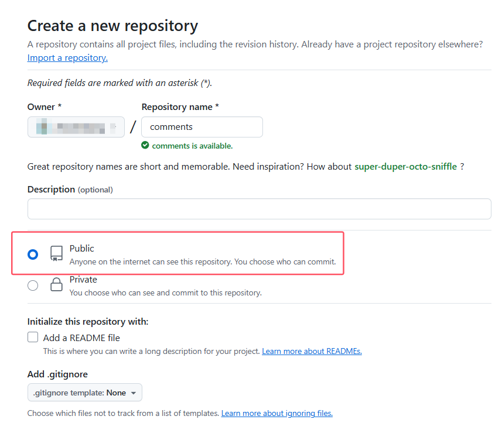
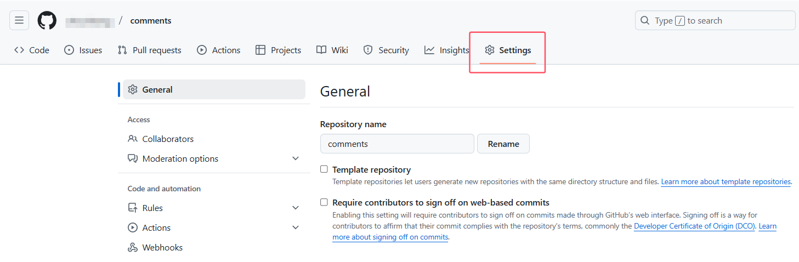
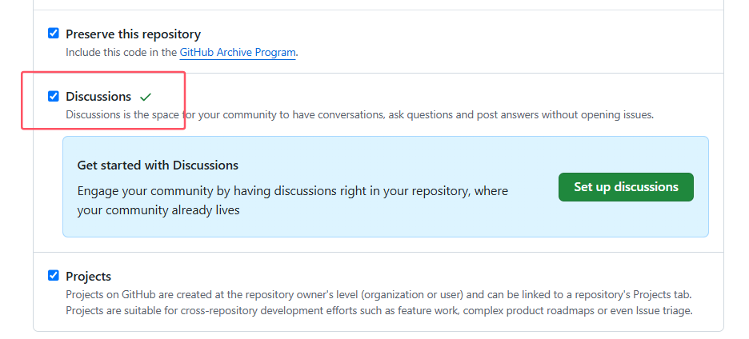
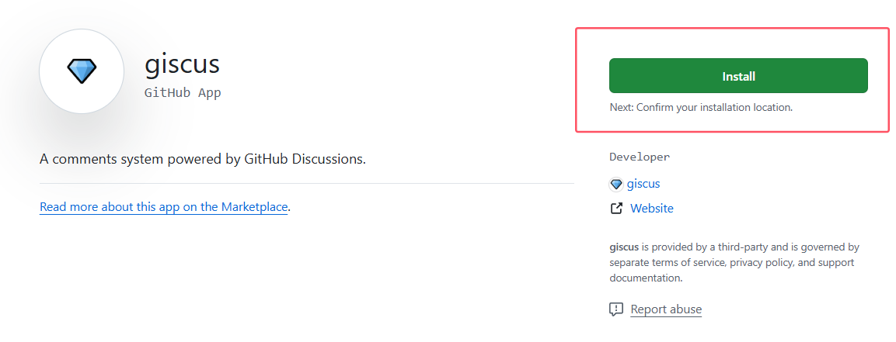
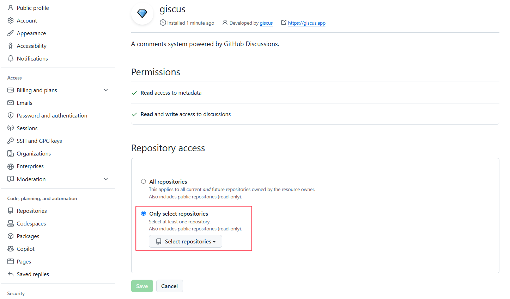
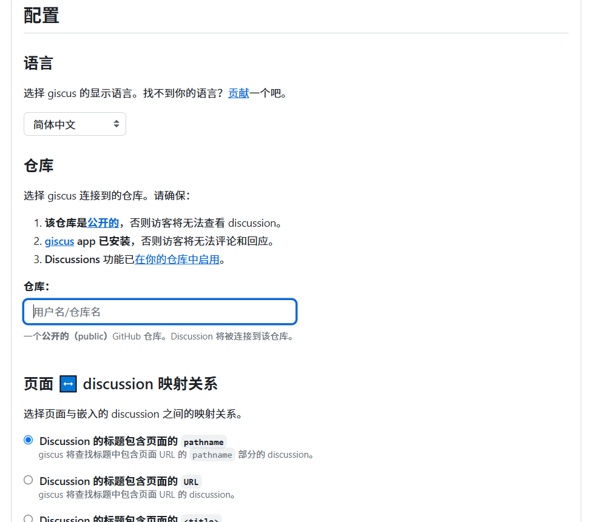
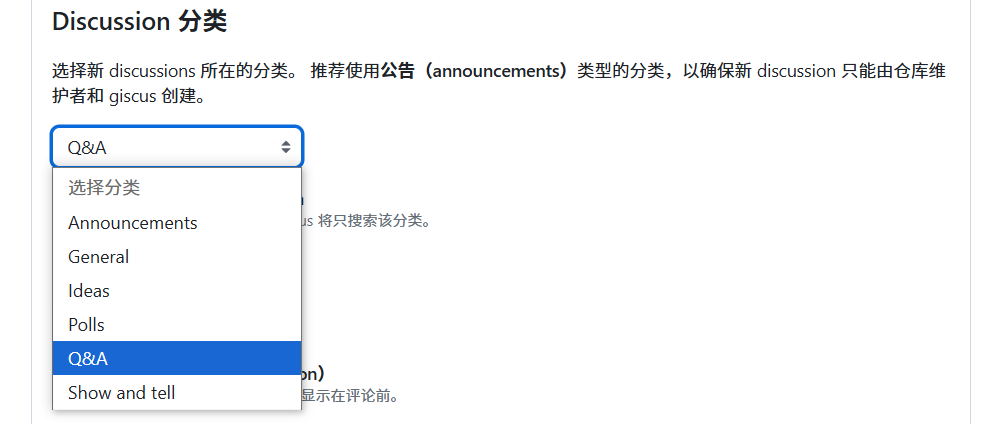
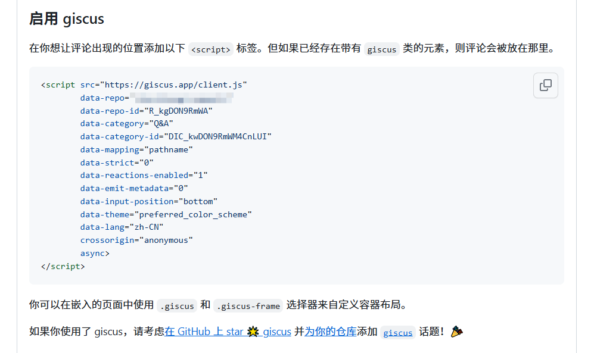

Qmd config giscus
Qmd生成的网页使用giscus来支持评论
1 Giscus
[giscus](https://giscus.app/zh-CN)
1.1 什么是giscus？
Giscus是一个基于Github Discussion的评论插件，可以为无服务器端的博客运营者提供简易的部署和拓展。根据官网，其存在以下特性：
开源！
无跟踪，无广告，永久免费；
无需数据库。全部数据均储存在 GitHub Discussions 中；
支持自定义主题、多种语言、高度可配置；
自动从 GitHub 拉取新评论与编辑；
可自建服务！
工作原理:
Giscus在加载时，会使用 GitHub Discussions 搜索 API 根据选定的映射方式（如 URL、pathname等）来查找与当前页面关联的discussion。如果找不到匹配的discussion，giscus bot就会在第一次有人留下评论或回应时自动创建一个discussion。
在评论时，访客必须按 GitHub OAuth 流程授权 giscus app 代表他发帖。或者访客也可以直接在 GitHub Discussion 里评论。你可以在 GitHub 上管理评论。
1.2 如何使用giscus？
首先要在GitHub建一个开放、可以使用Discussion的仓库，命名可以根据自己需要来，不能同网站仓库一致，因为独立存放评论内容。

创建仓库完成后，请点击仓库最后一个选项setting，往下滑，找到Features功能区中的Discussion，点击勾选，开启仓库的Discussion功能，并安装giscus app ，点击连接并且install到对应新建的仓库就可以了。


1.3 安装giscus app
Giscus 应用库可以帮助你更方便地管理设置。通过上述链接进入网页进行安装：

安装完成后转到如下页面，选择已创建好的comments仓库作为评论仓库。

1.4 配置giscus
进入<https://giscus.app/zh-CN>配置页面，在该页面中根据自己的需求，选择配置。

仓库选项是必须的，你需要把你创建好的comments仓库输入其中。
选择合适的分类：

嵌入到网站，在上述配置完成后，会生成一段script，将其放置在你想要展示评论的位置即可。
